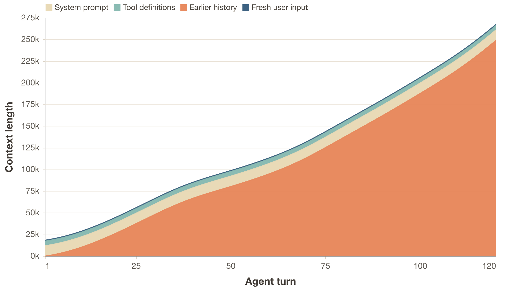
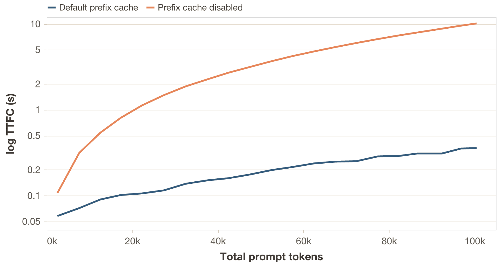
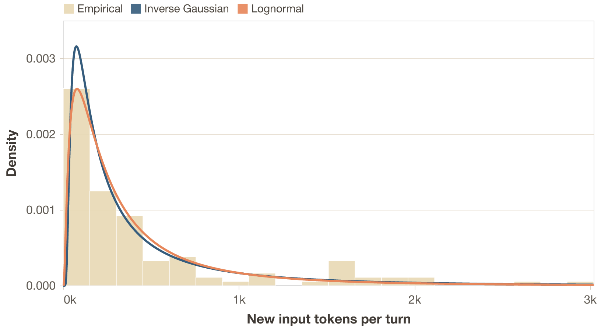
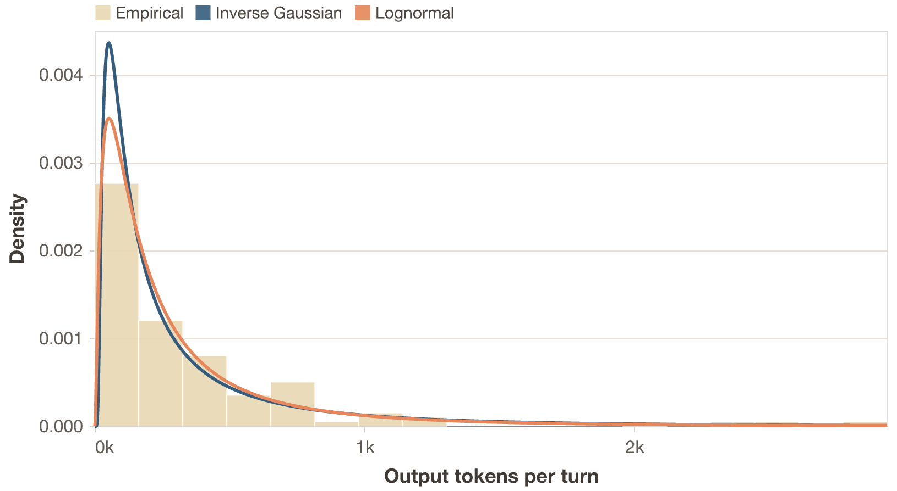
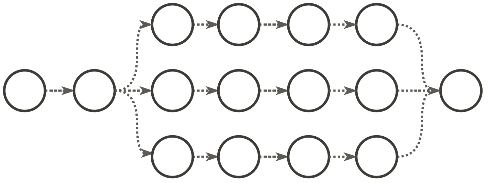
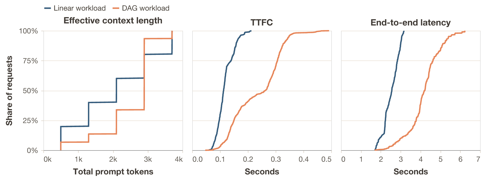
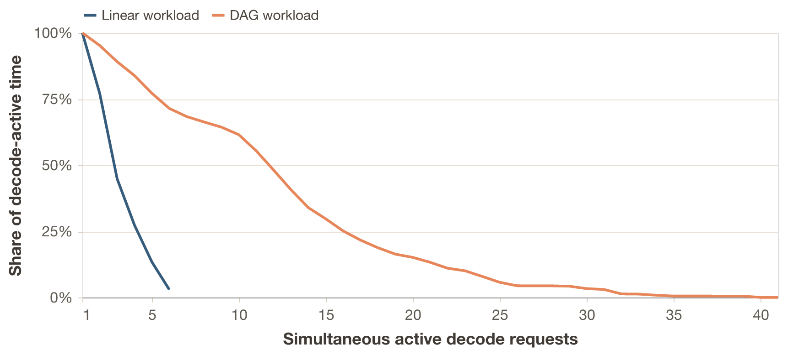
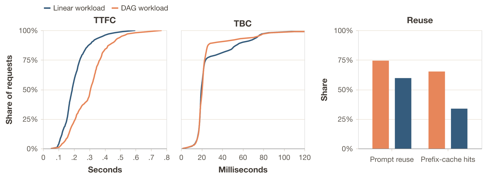
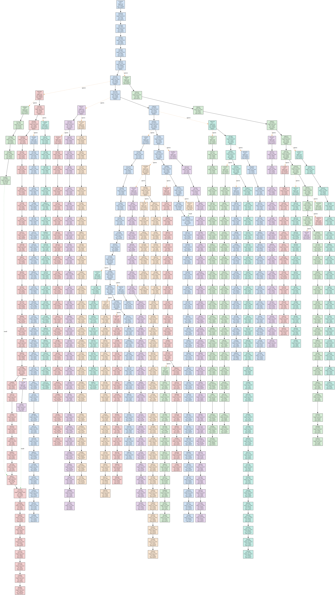
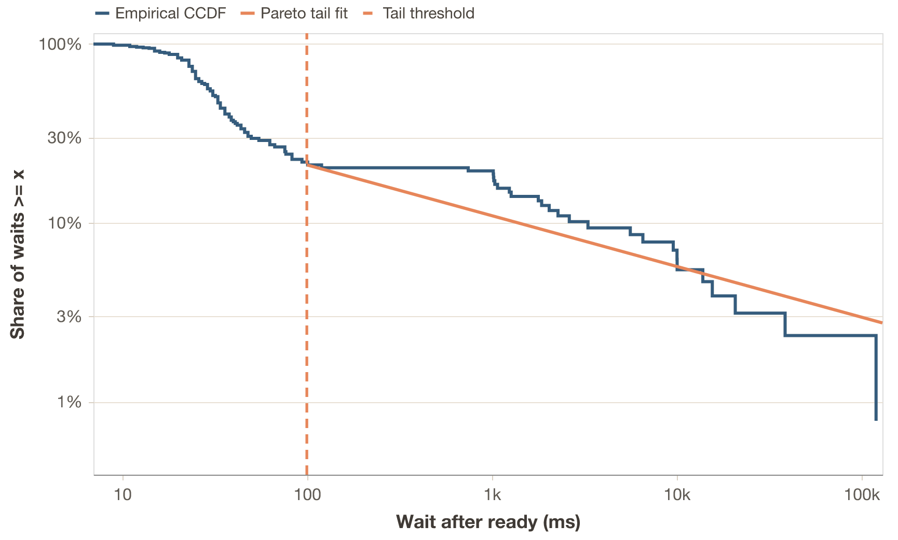

Agentic Workloads for Inference Evaluation
Why simple chat benchmarks are not enough for inference performance evaluation, and how to model agentic workloads.
Introduction
The evaluation problem
Inference systems have a large configuration space. New optimizations ship very fast, and each one interacts with others in ways that are hard to predict. To measure the quality of a particular configuration, you benchmark it. To compare inference systems against each other, you benchmark them under the same conditions.
Common popular inference benchmarking projects do this: nightly benchmarks across systems, reporting which one is fastest or most efficient. But what do we exactly mean when declaring a system better or worse? Artificial Analysis and InferenceX are useful examples of this benchmarking style. An inference system might be excellent at bursty, short-context workloads, while subpar at long context ones. Another might shine with quantized models on specific hardware. The definition of "good" depends entirely on the workload. For us to test an inference system before deployment, we need to understand how it behaves under representative workloads.
However, inference systems are complex scheduling software, which makes reasoning about how a workload interacts with all of the relevant components or optimizationsfor example, what are the engine's policies for KV cache management or prefill and decode scheduling? really not straightforward. So things are simplified. Common benchmark policies are to run independent requests or, at most, linear conversations: I send a message, the model responds, I append the response to the history, send another. Maybe we can also have a few conversations running in parallel.
And even though simple workloads are useful for that same reason and because they let us isolate variables, they might not be testing the whole range of interactions between components of the inference system. The reader might even let me make this analogy: simple workloads are unit tests, while agentic workloads are integration tests.
The workload gap
This means that there is a growing disconnect between what we benchmark and thus use as reference and what actually runs in production. Many prominent LLM applications today are agentic systems rather than simple chatbots of the 2023 era. OpenClaw and Claude Code run sessions with parallel tool calls, growing context and subagent delegation (see OpenClaw subagents and Claude Code subagents). The workload they place on an inference system does not look like a short linear conversation or independent random requests.
How an inference system handles iid requests versus agentic sessions; these are different regimes. Agentic workloads stress prefix caching across long sessions, memory management under bursty traffic, scheduling fairness when sessions have wildly different context sizes. None of this shows up in simple benchmarks. Evaluating on the wrong workload might lead to wrong conclusions, and wrong conclusions might cost real money.
Why not just run a real agent?
So, when we want to fully evaluate the performance of an inference system, we don't just want to test it against the simple, traditional workloads, but also against agentic ones. Naively, one might think: just run OpenClaw against the inference system, give it some tasks, measure the timings. This does not work for rigorous evaluation, though:
- Reproducibility. LLM outputs are non-deterministic. The same task produces different tool-call sequences on different runs. The workload itself changes between experiments, making A/B comparisons impossible.
- Control. Cannot to isolate variables. Hard to test scenarios that deviate from the simplest case, like what happens when fan-out increases from 2 to 8, or when think time between requests grows. With a real agent, you cannot control that. With a benchmark framework you can just change a parameter.
- Instrumentation. A benchmark framework measures time to first token, time between tokens, cache hit rates, etc. at the right granularity, without instrumenting someone else's code.
What we want is to replicate the shape of agentic workloads. The structure, the timing, the distributions, without running an agent. Then, you need a benchmarking framework that generates or reads these workloads and allows you to measure what's needed.
What this post does
To build such a benchmark, we first need a description of agentic workloads that is general enough to apply across implementations, but still precise enough to predict what an inference system sees. We do not really care whether "the agent writes code" or "searches the web", but rather about the trace model: a graph of inference requests, their input and output lengths, how much prefix each request shares with the previous one, and how much time passes between dependent requests.
I use OpenClaw as a reference, an open-source agentic system with broad adoption (and hype)I use it not only because it's open sourced; it's also representative with subagent spawning, parallel execution or context management.. The principles I extract apply to many agentic systems like Claude Code, because they roughly share the same high-level execution patterns of tool use, result appending, and subagent delegation (see Claude Code subagents).
Each principle corresponds to one part of this statistical description: request-graph topology (length and branching), prefix reuse, input and output-length heterogeneity and inter-request timing. For each, I connect the trace statistic to the inference system in two ways. First-order consequences are direct changes in work: more prefills, more decode tokens, larger fresh token tails, or more concurrent sessions. Second-order consequences are what those first-order changes might do to cache retention, scheduling, fairness, batching, and memory pressure. I aim to present:
- How to roughly describe agentic traces statistically: as session graphs plus distributions over token counts, waits, shared prefixes, and branching.
- How to replicate them in a benchmark: by measuring those distributions from real traces and generating matching synthetic sessions.
- Why it matters: inference systems behave differently under agentic load, and evaluating on the wrong workload might not give you the full picture.
Prerequisites
Before we get into OpenClaw, let's set up our shared vocabulary and execution model. If you work with inference systems, this will be familiar; if you don't, this will be a quick overview.
Inference basics
An inference system handles user requests. When a request arrives, the system computes and saves the keys and values of the input tokens: the prefill. Then, it generates output tokens one at a time: the decode. In practice, the system deals with many concurrent requests, carefully managing scheduling, CPU/GPU overlap, memory management, etc. All optimizations on top of this, like advanced KV-cache policies, chunking, prefill-decode disaggregation, speculative decoding, and more, are generally strategies to make the prefill, decode, or both faster or more efficient under concurrency (Orca, DistServe, Sarathi-Serve, PagedAttention).
Measuring inference performance
When we evaluate an inference system, we care about how fast it does prefills and decodes across a workload.In this post I focus on text-only requests because most agentic workloads as of time of writing are text-only, but requests can also be multimodal i.e. with images or audio, and the metrics which we care about would change in that case. The core metrics are:
- TTFT: time to first token. How long until the first output token arrives after submitting a request. Measures prefill speed.
- TBT: time between tokens. The interval between consecutive output tokens. Measures decode speed.
- TPOT: time per output token. Mean TBT across a request.
- E2E latency: total time from request submission to last output token.
- Throughput (token or request): Often measured as tokens per second (tokens processed / e2e latency), but can also mean requests per second being handled by the system.
Everything else, like cost per token or energy per token, derives from these plus hardware and pricing data. We can measure TTFT and TBT because modern inference APIs stream tokens back, so we can observe each one as it arrives. Some systems batch output tokens into chunks for efficiency, so we actually prefer TTFC (time to first chunk) and TBC (time between chunks) instead for agnostic evaluation.As of now, inference systems report streaming information differently, and there isn't a standard way of seeing the number of output tokens in output chunks. Counting the number of tokens in a chunk accurately is not always possible due to tokenization mismatches. Same idea but slightly coarser (see, for example, OpenAI streaming responses).
What is a session?
Throughout this post, I use the term session rather than conversation. A conversation is always linear: user, assistant, user, assistant. A session is the generalization. That is, a graph of requests with dependencies.
In this framework, an independent request is a session with one node. A linear conversation is a session where nodes form a chain, one after the other. An agentic session can be a chain too, but it can also be a DAG: when an agent spawns subagents, each runs its own chain of inference requests in parallel (Figure 5).
The agentic loop
Imagine we have an OpenClaw instance running. We are communicating with it via our preferred interface, having a back-and-forth conversation with it, and we ask it to perform a particular task. When the user message arrives, OpenClaw starts a loop comprised of several stages. We can roughly categorize each step as: Compose, Infer, Check, Execute and Append. First, it composes the new message from history plus new context and sends it to the LLM for inference. It checks if the LLM response was a final answer or if it decided to call tools first. For example, it might need to read a file, run a command, search the web. If so, the system executes the tool calls concurrently and appends all results to history. This loop usually repeats until the model decides it has completed the user's request.
def prompt(user_input, session):
session.history.append({"role": "user", "content": user_input})
while True:
# One LLM inference request
response = call_llm(
system=session.system_prompt,
tools=session.tool_definitions,
messages=session.history,
)
session.history.append({"role": "assistant", "content": response.content})
if response.stop_reason == "end_turn":
return response
# Make tool calls concurrently, then append results
results = await gather(
execute_tool(tc.name, tc.arguments) for tc in response.tool_calls
)
for tool_call, result in zip(response.tool_calls, results):
session.history.append({
"role": "tool_result",
"tool_use_id": tool_call.id,
"content": result.content,
})
# Loop back. Next iteration includes all tool resultsCode chunk 1: A typical agentic loop.
So, each iteration of this loop is one inference request. An important observation is that most tool calls (file reads, shell commands) do not involve any LLM calls: they execute locally and return text. Some tools do call models (image generation, LLM-backed web search), but those typically hit external APIs, not the inference system serving the main agent.For example, OpenClaw's web search can call Gemini, Perplexity, or other providers. These are external requests that just look like timing gaps from our inference system's perspective. This means a single session without subagents produces a linear chain of requests to the inference system under evaluation.
On top of this core loop, OpenClaw also has an outer loop that handles infrastructure events like context overflow. This outer loop does not currently change much of the steady state of the workload.
This is the core of the agentic loop. In the next section, I will treat the properties induced by both this loop and models as trace statistics.
An agentic workload
Now that we know why agentic evaluations are important, and are familiar with the basics of inference evaluation, what a session is, and how the agentic loop works, we can start characterizing an agentic workload.
For the purposes of inference evaluation, an agentic workload is a set of session graphs. Each graph contains represents inference requests as nodes and dependencies as edges. Each node carries quantities such as the number of input and output tokens, and each edge carries a delay and a history inheritance relationship. A benchmark does not need to replay exact tool semantics; it needs to reproduce the distributions of these quantities. The principles below are the dominant terms in that description. I extract them from real OpenClawTechnically, OpenClaw does not implement the agentic loop. According to the docs, it's a "... gateway for Pi agents". So we are actually talking about Pi agents running on OpenClaw. telemetry based on real sessions.All experiment results, extra visualizations and telemetry is available in the repo for this post.
Request expansion
The agentic loop in Code chunk 1 already gives us the first principle: one user task expands into a sequence of dependent inference requests. Most tool calls do not add requests directly to the evaluated inference system, but they do trigger another LLM call once their results are appended to history. A think+act+observe cycle can therefore turn one human request into many inference requests.
Statistically, the quantity we care about is not "user turns" but the distribution of inference requests per user task, or equivalently the depth of these dependency chains. In the trace underlying Case study 1: multi-turn sessions, 3 user interventions expand into 130 inference requests. In the near future, we can expect agentic loops to generate thousands of inference requests per user task.
The first-order consequence is that end-to-end latency compounds across many sequential prefills and decodes, not one. The second-order consequence is that the scheduler sees long lived dependent chains rather than iid requests, which changes batching opportunities and how long session state remains live.
Stateful prefix reuse
In Code chunk 1, we can see how every inference request includes the full conversation history. The model needs to see everything that happened before to produce a coherent next step: all user messages, assistant responses, tool results and other content. Implementation-wise, this produces monotonic context growth. Statistically, the more fundamental quantity is prefix overlap between consecutive requests.
This means that each request in the chain is strictly larger than the previous one. Turn N's input contains everything from turns 1 through N-1, plus whatever new context was added. This means that every request is assembled as follows (approximate numbers for Pi agents):
[system_prompt] order of 10^4 tokens
[tool_definitions] order of 10^3 to 10^4 tokens
[message_history] grows with each turn
[new_input] latest user message, tool results and other contentWe can write an approximation of the input token count $n$ for turn N as:
$$n_N = S + D + \sum_{i=1}^{N} (U_i + A_i + R_i + X_i)$$where $S$ is the system prompt, $D$ the tool definitions, $U_i$ the user input at turn $i$, $A_i$ the assistant response, $R_i$ the tool results (zero if no tools were called that turn), and $X_i$ other content such as injected or synthetic history turnsFor example, subagent summaries that get injected into the parent's context. The key observation is not only that input grows, but that request $N$ and request $N+1$ share almost all of their tokens as N increases.

Figure 1: Illustrative context growth over turns. For a single user intervention at turn 1, context grows until +250k. Model output, tool results and other events are accumulated in history, accounting for the majority of the context.
Why this matters for the inference system
This is arguably the dominant property of agentic workloads. The prefix overlapDefined as the ratio of the shared consecutive tokens, from the start, to the total tokens in the input. between consecutive requests is very large, and it can reach 90-99% of the input. In other words, request $N$ and request $N+1$ share almost all of their tokens. As the context horizon of LLMs grows, this overlap will tend to 100%.
On top of this, there is the constant scaffold that is the system prompt and tool definitions. This is an extremely high-value target for caching, as in most cases it's repeated across all requests and sessions.
The first-order consequence is on prefill work. An inference system that exploits this via prefix cachingPrefix caching means reusing the KV-cache computed for request $N$ when processing request $N+1$. Since the shared prefix is identical, the system only needs to compute KV entries for the new tokens. This turns prefill into an approximately constant-cost operation, but requires complex cache management. Hybrid transformer + Mamba, sparse Attention or other lower cache footprint models just decrease the slope of the memory need. only needs to prefill the new tokens at each turn (see vLLM prefix caching). One that does not exploit it recomputes the entire growing history from scratch.
The second-order consequence is on cache policy. Once the workload is dominated by prefix reuse, cache placement, eviction, and offloading strategies start to dominate TTFT differences between systems that otherwise use prefix caching and the same model. If you evaluate an inference system on independent requests, where there is no prefix to cache, you never observe this regime.
Case study 1: multi-turn sessions
To make the workload regime concrete, we start with a simple first case study: one real multi-turn coding trace and a synthetic workload derived from it. The goal here is to establish the basic prefix-reuse regime that the later case studies build on.
- First, I ask OpenClaw 26.3.2 with GPT-5.1-Codex-Mini to implement a web app for interactive exploration of LLMs via interpretability methods. We cap the total inference time to ~15 minutes.Note that all numbers of trace characteristics in this post are probably going to be underestimating what power users and more advanced agentic harnesses generate.
- Then, a measure statistical properties of the resulting trace is performed: token counts, timings, prefix reuse, etc.
- Generate a synthetic workload from the trace that mimics the agentic pattern just described.
- Compare that workload with and without prefix caching.
To run and measure all benchmarks, I use Veeksha v0.2.2, an open-source benchmarking framework for LLM inference systems. It supports sessions as graphs of requests with dependencies, configurable timings, prefix caching simulations, replicating real-world workloads, microbenchmarks, and more.
Trace analysis
When the agent is stopped, we have an output OpenClaw trace that looks like this:
- 1 linear chain of inference requests
- 130 requests in total generated from 3 user interactions, an expansion factor of roughly 43x
- Median input and output length of 490 and 214 tokens, respectively.Means 1570 and 612, inflated by a few long context requests. Every pair of requests is roughly the model deciding to call a tool and then observing the result. Interestingly, we do not see the model deciding to call a batch of tools at once.
- A median waiting time of 32ms between requests (after the previous request finished; mean of 6s, biased by 2 slow interventions)
- A used context length of 117k tokens
- A total of 8.2 million token cache reads
The synthetic workload
We now have the first empirical parameters of the trace: chain depth, per-request token counts, wait times, and prefix reuse. Let us now measure the actual inference performance numbers with similar sessions. Here is how the configuration for the multi-turn workload approximately looks. We set numbers that approximate the above trace characteristics based on the medians. Take a moment to understand it, as it will help you understand the workload and the rest of the experiments.
# Q: how are sessions generated?
session_generator:
type: synthetic # synthetically, with a linear (chain) shape
session_graph:
type: linear
num_request_generator: # each session has between 100 and 150 turns
type: uniform
min: 110
max: 150
request_wait_generator:
type: poisson
arrival_rate: 0.032 # turns wait a mean of 32ms before being dispatched
channels: # each turn introduces between 400 and 600 new tokens from the user...
- type: text
body_length_generator:
type: uniform
min: 400
max: 600
output_spec: # ... and 150 to 250 new tokens from the assistant
text:
output_length_generator:
type: uniform
min: 150
max: 250
# Q: how are sessions dispatched to the inference system?
traffic_scheduler:
type: concurrent # with a concurrency-based scheduler...
target_concurrent_sessions: 1 # ...that allows one session at a time
# We dispatch 5 sessions in total
runtime:
max_sessions: 5
seed: 77Code chunk 2: The synthetic workload configuration for the multi-turn sessions with prefix caching.
I run the above workload independently against two Qwen3.5-35B-A3B replicas (thinking disabled), each one running on vLLM 0.17.1 and an H100 GPU. Replica A uses the default prefix cache configuration, while replica B has it disabled.
What is happening?
- With the default prefix cache, TTFC stays in the sub-second regime even as the session approaches 100k prompt tokens.
- With prefix caching disabled, the full prompt has to be recomputed on every turn, so TTFC rises into the multi-second regime as context grows.

Figure 2: TTFC versus total prompt tokens for the same synthetic requests (log scale on the y-axis). With the default prefix cache, median TTFC grows from roughly 60ms to 0.33s across the session. With prefix caching disabled, median TTFC rises from roughly 0.1s to about 10s by the time the prompt reaches 100k tokens.
Takeaway
This first case study mainly establishes the regime. Agentic workloads are long lived, stateful traces with very high prefix reuse, so cache handling quickly becomes a dominant factor in latency. Once that basic effect is in place, the more interesting questions are the ones taken up in the next sections: how token heterogeneity, bursty timing, and branching change the behavior of systems that already exploit prefix reuse.
Token-count heterogeneity
Prefix reuse does not mean the amount of new work per step is constant. At any point in an agentic loop, the model might append a small memory lookup, a medium shell output, a huge file read, or a large batch of tool results. There are other context injection events too, like subagents sending summaries and artifacts to the parent agent. Similarly, the distribution of output tokens in an agentic workload is dictated by a variety of events. Many inference requests return small messages, where the model selects tools or acknowledges results. They usually stem from intermediate control events in the loop of Code chunk 1. Others, like turn ends, where models modify artifacts or respond to the user, or context overflows, where the model needs to compact the full history, generate large answers.
Statistically, the quantities that matter are the incremental input size between consecutive requests, that is, the number of fresh, non cached tokens added on top of the shared prefix, and the number of output tokens generated per request.
In real agentic traces both distributions are broad and usually heavy tailed (Figure 3, Figure 4). Most steps add a modest amount of tokens and generate short outputs, but a small number create very large bursts.

Figure 3: Empirical vs fitted distributions of new input tokens for the trace in Case study 1: multi-turn sessions. Cropped to 95th percentile (max value is around 20000 tokens). Most steps add just a few new input tokens, but a small number add very large bursts. I tested lognormal, Weibull, gamma, exponential, Pareto, normal and inverse Gaussian distributions, and found that the latter fits best.
Performing the same fitting experiment on output tokens also yields the inverse Gaussian as the best fit for our empirical data in the multi-turn workload of Case study 1: multi-turn sessions.

Figure 4: Empirical vs fitted distributions of generated output tokens for the trace in Case study 1: multi-turn sessions. Cropped to 95th percentile (max value is around 14000 tokens). Same tested distributions as for the input tokens, and same best-fit.
The first-order consequence is that both prefill and decode work are heterogeneous across the trace rather than roughly constant per turn. Two requests with similar total context length can have very different prefill costs depending on how large the fresh tail is, and some generations are much longer than others. The second-order consequences are different for the two phases. Large fresh token bursts create prefill interference: they occupy prefill capacity for longer, which can perturb batching and worsen tail latency for other sessions sharing the system. Long generations remain active for longer, which extends the lifetime of the KV and changes batch characteristics. Depending on the inference engine, this can affect metrics such as throughput, completion latency, TBT, or fairness under mixed workloads.
For benchmarking, the direct consequence is that we should not model either side with smooth average increments per turn, or sample from uniform distributions. For example, in Veeksha's spec (Code chunk 2), this means we change channels.text.body_length_generator and output_spec.text.output_length_generator from uniform to:
body_length_generator:
type: inverse_gaussian
mean: m
shape: s # controls dispersion, lower -> more heavy tailedWhere:
mis ~815 for input tokens and ~615 for output tokenssis ~200 for input tokens and ~145 for output tokens
Prefix invalidation
When the context length reaches its limit in modern agentic systems, a compaction event is created. The event creates a request asking the model to summarise, and then a new session is created with the summary as fresh context. This effectively invalidates the prefix of the original session.
We can model this event with the previous notes for prefill and decode heterogeneity, as it just creates moderately sized decodes (for summarisation) and prefill (new session with fresh summary), which fits in their heavy tail description.
Bursty timing
Agentic systems are being provided with increasing ways to interact with the world. File read and write, program execution, API calls to other systems, computer use, and soon independent real-world + task navigation. We can consider these as tool calls in our agentic loop of Code chunk 1. Now, the idle time between subsequent requests in a session is dictated mainly by three factors:
- If user turn, how much the user takes to respond
- If tool turn, the nature of it. A test suite might take minutes, a file read might take tens of ms.
- Dispatch inefficiencies of the agentic system.
In the context of session graphs, I define the property wait_after_ready of a node (request) as the time between completion of the last parent request and the dispatch time of the node. Taking a look at its distribution in our sample trace, we see how almost 80% of the waits are less than 100ms, while the upper tail is heavy with 6% being larger than 10 seconds. This effect is similar to that of the input and output token distributions.
Again, this heavy tail effect has implications beyond workload shape. During idle periods of a session, its KV state stays unused. This in turn increases the chance that, due to memory pressure and cache policies, at least a fraction of cache won't be resident by the time the next request of the session is dispatched. It will then have to pay a recomputation cost. This is not necessarily bad, as it might be the correct global decision; the point is that it creates a cache allocation tradeoff, thus hurting other local properties.
Fidelity on synthetic workloads
While the empirical distribution of wait times roughly matches that of the tokens, a best-fit analysis tells us that it's actually not well described by a single, smooth distribution; a spike+tail description fits best (Figure 10 in annex). Measured another trace, arguably more complete and representative, and got similar results. So, does this mean that a benchmarking framework should include ways of sampling wait times according to complex spike+tail generators? I argue that with synthetic workloads, we care more about preserving clarity and the broad operational regime instead. An inverse Gaussian or lognormal distribution would do it.
If we care about absolute fidelity a better option is to replay traces, preserving every detail of the original workload instead of approximating it. This option is especially useful for those who already have a lot of production traffic.Veeksha can do this for a variety of trace types, like agentic ones directly from Claude Code or OpenClaw, while preserving the DAG, token and timing distributions of the workload.
Session branching
The session characteristics described until now have all been describing linear sessions. A big component of agentic workloads, though, is how agents can spawn subagents. Similar to how cells organised into specialised subsystems (organs) in nature, as agentic capabilities of models increase we will see further and further hierarchical delegation of work; each subagent focused on some particular task.
In practice, there are many ways to implement subagents and their reporting strategies.Should agents communicate across hierarchies? Only to their parents? Peers? In the case of the OpenClaw harness, the subagent flow is:
- Agent decides to spawn a subagent. It does so by calling the
sessions_spawntool, which asynchronously spawns a subagent. - Subagent starts with its own system prompt plus the task description from the parent as context. It does not inherit the full context.
- When finished, the subagent announces the results back to the parent. The parent receives a message with the subagent's output.
- Nesting depth (sub-subagents and more) and number of allowed spawns per agent are configurable, as well as max concurrency (see OpenClaw session tools and OpenClaw subagents).
In the context of the DAG that is an agentic session, this means that any node can have multiple children or parents. It isn't a linear chain anymore. Fan-out and fan-in degrees can be bigger than 1, which creates dependencies between requests in a way that we didn't have before. It also introduces context inheritance dynamics between nodes (not all nodes inherit the full history).

Figure 5: A simplified DAG session. One request has a fan-out degree of 3 (subsession spawn), and one a fan-in degree of 3 (subsessions reporting back). Shape used in Case study 2 and Case study 3.
To illustrate this, I ask OpenClaw to produce a high-quality knowledge graph and analysis of all major AI frameworks. I nudge it to make use of subagents, each dedicated to researching some part of a particular framework. OpenAI rate limit are reached in ~5 minutes, point at which the session is:
- 575 requests total
- 35 sessions (spawns)
- ~3.2M total input tokens
- ~150k total output tokens
- 44 requests deep on the longest path
- 25 requests wide at the maximum width
- A max fan-in and fan-out degree of 2.
Take a look at the resulting session graph in the Annex (Figure 9).
When building an agentic benchmark, we need to consider details such as branching factor, depth and length of child sessions and history inheritance ratios. Higher branching factors will usually mean much higher request concurrency; with all of what it implies at both first glance and in a more coplex way. It will directly affect the total pressure of the workload on the inference system's memory, compute and scheduling states.
Case study 2
I now compare two workloads of the same fresh token volume, but that differ in shape. Workload A ("linear workload") is a sequence of short linear sessions, while workload B ("DAG workload") is a sequence of generic DAG sessions (Figure 5). Over a full pass, they both have the same total number of new input and output tokens, so from the application's perspective they do the same amount of work. This does not imply identical inference work: the DAG workload may, for example, decode at longer effective context lengths and induce different cache patterns. That distinction is intentional. The point is to show that, even under the same user token budget, workload shape alone can change the reported performance of the system if not taken into account properly.
I run both workloads independently against the same, but fresh, system, at a shared session arrival rate of 0.18 sessions/s. The linear workload uses 30 sessions of 5 requests each, while the DAG workload uses 10 sessions of 15 requests each (Figure 5) with a 3-way fan-out and fan-in.Workload spec, results and Veeksha config in annex (Annex: case study 2). wait_after_ready is always 0. I create the traces synthetically and replay them for 300 seconds with Veeksha's timed_synthetic_session trace session generator (in annex). Model and system are the same as in Case study 1: multi-turn sessions

Figure 6: Matched fresh token budget, different effective work. Left: ECDF of total prompt tokens. Middle: TTFC ECDF. Right: end-to-end latency ECDF. Even though both workloads keep fresh tokens fixed, the DAG workload shifts mass into the longer-context regime, moving the latency curves.
Under the same fresh token budget, the DAG workload has 116.7% higher TTFC p99, and 77.2% higher E2E p95 than the linear workload; It actually has 20.2% longer mean prompt lengths! See Annex: case study 2 for the full comparison.
Figure Figure 6 also shows why looking only at prompt length p95 is misleading here: the p95 total prompt length is effectively unchanged, but the median rises from 2100 to 2899 tokens, so much more of workload B spends time in the long context regime. B also induces burstier concurrency: while session arrival is 0.18 sessions per second, the scheduler sees far more simultaneous active decodes because DAG sessions contain more requests with some degree of dispatch parallelism. And even though B has a 39% higher prefix cache hit rate than A, it is not enough to compensate for the last two characteristics; thus increasing perceived TTFC.

Figure 7: Duration-weighted decode overlap. For each x axis value k, the y axis shows the share of total decode time spent with at least k simultaneous decode requests. The linear run never exceeds 6 simultaneous active decodes. The DAG run reaches 41, and spends more than 60% of decode-active time at 10+ simultaneous decode requests.
Topology alone can strongly influence benchmarking results when not studied properly beforehand. Inference systems, however, are not usually provisioned for a fixed total token budget.
Case study 3
Case study 2 briefly shows that there is more that meets the eye when evaluating capacity on different workloads. In case study 3 I tune two inference deployments on the previous DAG and linear workloads (same system and model as well), provisioning each one based on maximizing healthydefined by the SLOs P95 TTFT $\leq$ 0.75s and P95 TBC $\leq$ 75ms, as well as maximum error rate. normalized request rate $\rho$. $\rho_l$ refers to the normalized request rate given the linear workload as reference, and $\rho_d$ for the DAG workload. $\rho_l^*$ and $\rho_d^*$ refer to the maximal value found in the respective value search.
In both workloads, each request always has 500 fresh input tokens and requests 300 output tokens, so each deployment sees a fresh input rate of 500$\rho$ tokens/s and a requested output rate of 300$\rho$ tokens/s for all values $\rho$ in the search grid. Session dispatch rates are thus:
- $\frac{\rho_l}{5}$ sessions/s for the linear workload
- $\frac{\rho_d}{15}$ sessions/s for the DAG workload
I compare both deployments and show how it is possible to under/over provision given different reference workloads.
Results
The experiments yield $\rho_l^*$ of 5.50 and $\rho_d^*$ of 6.67, which means a higher system capacity with the exact same configuration and hardware resources when the workload looks like the DAG reference. Under the same SLO regime, DAG sustains about 1.21x more useful work.
Imagine that we were sizing a fleet of GPUs for inference. We have as reference a linear workload, but the real traffic looks more like the DAG one. In this case, we would have about 17.5% slack capacity relative to the provisioned fleet, and the linear-tuned fleet would be roughly 21% larger than needed for DAG traffic. Those are resources that would be wasted.
Table 4, Table 5, and Table 6 in the annex collect the frontier, same-budget replay, and deployment-implication numbers in full.

Figure 8: Frontier behavior at the optimal normalized request rates $\rho_l^*=5.50$ and $\rho_d^*=6.67$. Linear TTFC (left) is consistently lower, consistent with its shorter context lengths. DAG has a better mid tail distribution and reaches a similar p95 at a higher load, consistent with higher cache reuse (right).
Conclusion
Simple and agentic workloads (you need both)
Simple workloads are useful for measuring raw prefill or decode performance and isolate confounding variables. Agentic workloads reveal deeper effects in inference systems, like cache retention under bursty traffic, scheduling fairness under mixed concurrency, memory pressure from long lived sessions, and the combined effects of request expansion, branching and prefix invalidation.
Putting it all together
A single agentic session is usually a DAG of parallel inference chains with partial history inheritance. One user task expands into many inference requests, consecutive requests share most of their prefix, fresh input and output sizes vary widely, waits are bursty, and occasional compaction events invalidate the prefix.
I have talked about these agentic workload particularities:
- Request expansion: the think-act-observe loop turns one user task into a long chain of dependent requests.
- Stateful prefix reuse: full-history appends make consecutive requests share most of their prefix, though compaction or partial-history handoffs can reset or reduce that reuse.
- Token-count heterogeneity: tool results, summaries and final answers create broad fresh-input and output distributions, including compaction events that generate summary decodes and prefill restarts.
- Bursty timing: tool latency, user think time and dispatch overhead create broad
wait_after_readygaps. - Session branching:
sessions_spawnturns one chain into a DAG with fan-out, width and partial history inheritance, while repeated agent and subagent scaffolds create reuse opportunities across sessions.
In conclusion:
- Agentic traces are structured as session graphs plus distributions over token counts, waits, prefix reuse, invalidations and branching.
- We can benchmark them without running a real agent by measuring those distributions and generating synthetic sessions from them. Replaying traces is also useful.
- This matters because inference systems behave differently under agentic load, so the wrong workload can give the wrong conclusion.
Where to go from here
If you want to try these ideas on your own inference system, the Veeksha repository and documentation are a good starting point. Thank you for reading.
References
Annex

Figure 9: Real session structure extracted from the trace in the section Session branching. Open in a new tab for high resolution exploration. Only 2 subagents return results because I was rate limited fast.

Figure 10: Empirical CDF of wait_after_ready for the OpenClaw trace in Case study 1: multi-turn sessions, log-log axes. The dashed line marks the 100 ms threshold used for the Pareto tail fit. We see the initial spike and the slower heavy tail.
Annex: case study 2
| Property | Linear workload | DAG workload |
|---|---|---|
| Shared session arrival rate | 0.18 sessions/s |
0.18 sessions/s |
| Sessions | 30 |
10 |
| Requests per session | 5 |
15 |
| Total requests | 150 |
150 |
| Fresh input tokens per request | 500 |
500 |
| Output tokens per request | 300 |
300 |
| Total new input tokens | 75000 |
75000 |
| Total output tokens | 45000 |
45000 |
Table 1: Workload specification of case study 2 runs.
session_generator:
type: trace
trace_file: traces/workload_shape/workload_b_dag.jsonl
wrap_mode: true
flavor:
type: timed_synthetic_session
page_size: 16
seed: 42
output_dir: benchmark_output/workload_shape_case_study/qwen/dag
server: !include shared/server_h100_qwen3_5_35b_a3b.yml
traffic_scheduler: !include shared/rate_traffic.yml
client: !include shared/client_qwen3_5_nonthinking.yml
runtime: !include shared/runtime_qwen.yml
evaluators: !include shared/evaluators.yml
trace_recorder: !include shared/trace_recorder.ymlCode chunk 3: Sample Veeksha configuration for case study 2 DAG runs.
| Comparative quantity | Value |
|---|---|
| DAG / linear effective-input ratio from the trace design | 1.203175 |
| DAG / linear cacheable-history ratio from the trace design | 1.266667 |
Table 2: Derived workload ratios for case study 2.
| Metric | Linear | DAG | DAG vs. linear |
|---|---|---|---|
| Mean total prompt tokens per request | 2094.3 |
2517.5 |
20.2% |
| P95 total prompt tokens | 3700.0 |
3699.0 |
-0.0% |
| TTFC p99 | 0.205s |
0.444s |
116.7% |
| E2E p95 | 3.054s |
5.410s |
77.2% |
| TBC p99 | 11.1 ms |
52.4 ms |
372.1% |
| vLLM prefix-cache hit rate | 0.495 |
0.690 |
39.4% |
Table 3: Observed comparison for case study 2.
Annex: case study 3
| Quantity | Linear workload | DAG workload |
|---|---|---|
| Max healthy normalized request rate $\rho^*$ | 5.50 |
6.67 |
| First failing normalized request rate | 5.51 |
6.68 |
| First limiting SLOs | TBC p95 > 75ms |
TBC p95 > 75ms |
Table 4: Case study 3 frontier and first-failure points under the shared p95-based SLO regime.
| Metric | Linear at $\rho_l^*=5.50$ | DAG replay at $\rho_l^*=5.50$ | DAG at $\rho_d^*=6.67$ |
|---|---|---|---|
| TTFC p95 | 0.386s |
0.426s |
0.508s |
| E2E p95 | 11.61s |
8.40s |
9.69s |
| TBC p95 | 74.9 ms |
57.6 ms |
74.6 ms |
| TPOT throughput | 35.6 tok/s |
47.0 tok/s |
39.8 tok/s |
| Prefix-cache hit rate | 0.338 |
0.686 |
0.652 |
| Prompt reuse ratio | 0.597 |
0.743 |
0.744 |
Table 5: Observed frontier metrics and same-budget replay metrics for case study 3.
| Comparative quantity | Value |
|---|---|
| DAG replay at $\rho_l^*$ meets all SLOs | yes |
| DAG / linear useful-work ratio at the frontier | 1.21x |
| Fleet fraction needed if real traffic is DAG-shaped | 0.825x |
| Slack capacity in the linear-tuned fleet | 17.5% |
| Linear-tuned fleet size relative to DAG need | 1.21x |
Table 6: Derived deployment implications for case study 3.